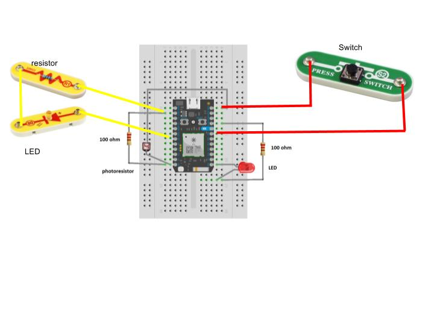

Photon as Arduino

Flash to the Photon as an .ino file
On the digital the right side, the push button should control the red LED.
On the analog the left side, the photoresistor should control the Yellow LED strength.
See if you can make the analog side work in reverse?
Hint: the voltage devider used for the photoresistor can be reversed. Reverse the ground and the 3V3.